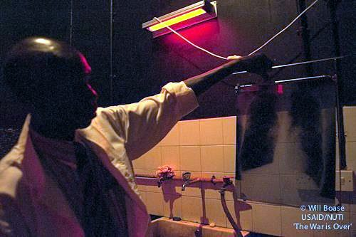
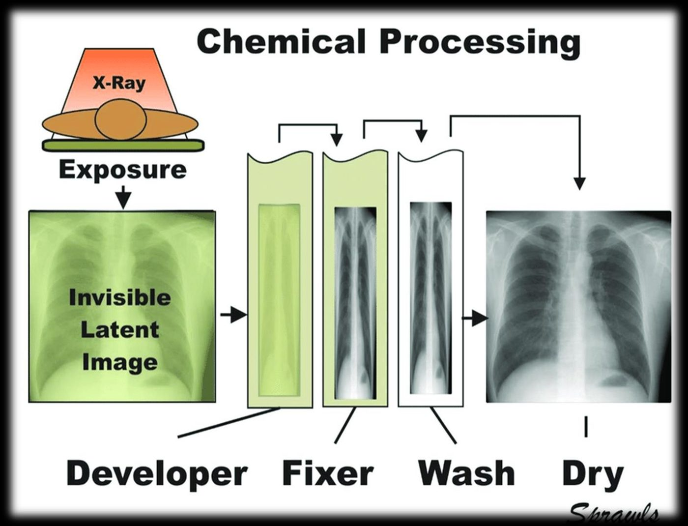
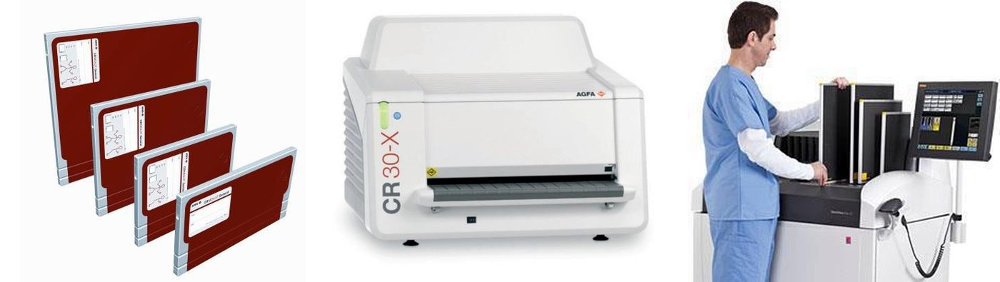
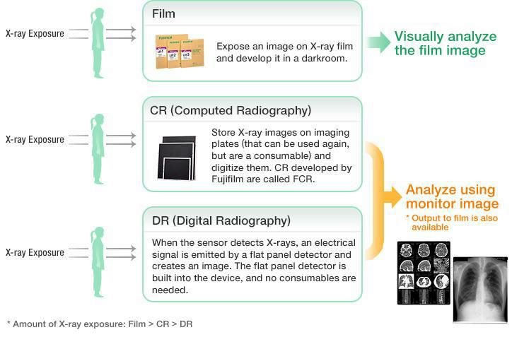
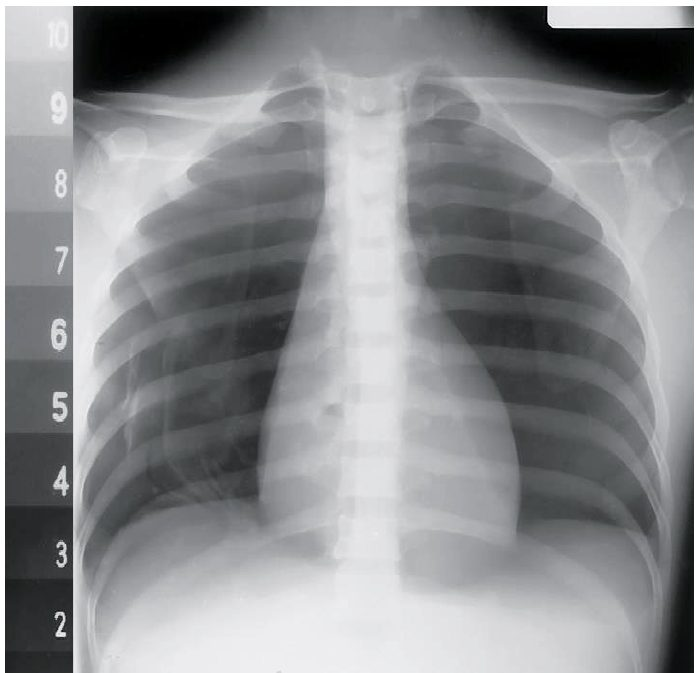
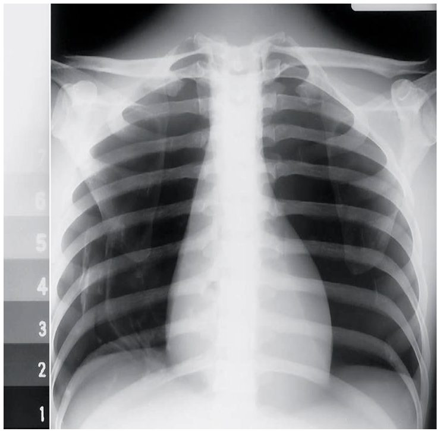
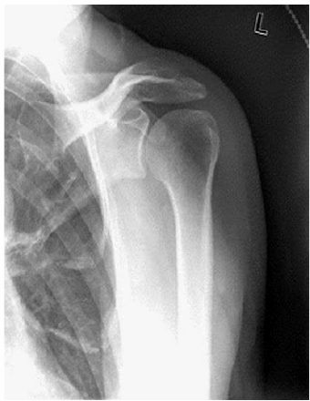
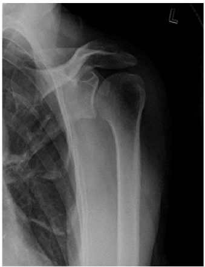
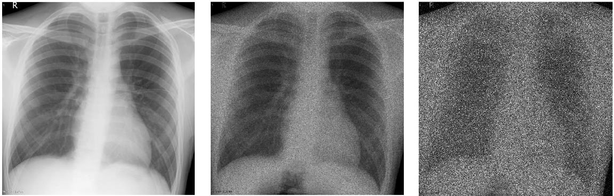

جودة الصورة وعوامل التعرضImage Quality, Exposure Factors, Brightness, Contrast, Resolution, Distortion and Noise
نظري · م02 · 7.5 دقيقةأقسام المحاضرة (8)
تقنيات التصوير: التناظري والرقميImaging Technology: Analog and Digital
التصوير التناظري (تقنية التصوير التقليدية)Analog (Conventional Imaging Technology)
This is the traditional method that is often referred to as film-based radiography the need for processing chemicals, the use of a dark room, the need for human resources, as well as the difficulty to maintain high quality images are all factors that limit the wide-scale use of this method.
هذه هي الطريقة التقليدية التي يُشار إليها غالباً باسم التصوير الشعاعي المعتمد على الفيلم. إن الحاجة إلى مواد التحميض الكيميائية، واستعمال الغرفة المظلمة، والحاجة إلى الموارد البشرية، وكذلك صعوبة المحافظة على صور عالية الجودة، كلها عوامل تحدّ من استعمال هذه الطريقة على نطاق واسع.

التقنية التناظرية: التحميض الكيميائيAnalog Technology

تقنية التصوير الرقمي (المحوسب)Digital (Computed) Imaging Technology
This technology eliminates the need for dark-room and chemical processing of the film, since reusable phosphor plates are used as image receptors and are scanned by CR reader (digitizer with laser scanner).
هذه التقنية تُلغي الحاجة إلى الغرفة المظلمة وإلى التحميض الكيميائي للفيلم، لأنها تستعمل ألواح فوسفور قابلة لإعادة الاستعمال بوصفها مستقبِلات للصورة، وتُقرأ هذه الألواح بقارئ CR (محوِّل رقمي مزوَّد بماسح ليزري).

Laser scanner (CR-reader) convert the stored information into digital images. The image receptor then erased prior to the next use.
يحوّل الماسح الليزري (قارئ CR) المعلومات المخزّنة إلى صور رقمية، ثم يُمسَح مستقبِل الصورة قبل استعماله التالي.
تطور التصوير الشعاعيRadiography Development

Amount of X-ray exposure: Film > CR > DR
كمية التعرض للأشعة السينية: الأكثر في الفيلم، ثم CR، والأقل في DR.
عوامل التعرضExposure Factors
1- ذروة الجهد بالكيلوفولتKilovoltage peak (kVp)
kVp is the primary control of beam quality and beam penetrability.
kVp (ذروة الجهد بالكيلوفولت) هو المتحكّم الأساسي في نوعية الحزمة وقدرتها على الاختراق.
High quality primary beam is higher energy and more penetrate the anatomy of interest.
الحزمة الأولية عالية النوعية أعلى طاقةً وأكثر اختراقاً للمنطقة التشريحية المراد تصويرها.
kVp has more effect than any other factor on image receptor exposure because it affects beam quality.
لـ kVp تأثير على تعرض مستقبِل الصورة أكبر من أي عامل آخر، لأنه يؤثر في نوعية الحزمة.
With increasing kVp, more x-ray are produced and have greater penetrability and they produce more scatter radiation.
مع زيادة kVp تُنتَج أشعة سينية أكثر، وتكون قدرتها على الاختراق أكبر، وتُنتج إشعاعاً متشتتاً أكثر.
2- الملي أمبيرMilli-Amperes (mA)
The mA was selected for patient exposure determined the number of x-ray produced and radiation quantity. The unit of electric current is the ampere (A). The more electrons cause to flow through the x-ray tube, The more x-ray will be produced, this relationship is directly proportional when changes in mA, this will change x-ray quantity and does not alter the kinetic energy of electrons. Therefore x-ray quality remains fixed with change in mA station.
قيمة mA (شدة تيار الأنبوب بالملي أمبير) التي تُختار لتعرض المريض تحدد عدد الأشعة السينية المُنتَجة وكمية الإشعاع. ووحدة التيار الكهربائي هي الأمبير (A). كلما زاد عدد الإلكترونات التي تمرّ عبر أنبوب الأشعة السينية زادت الأشعة السينية المُنتَجة، وهذه العلاقة طردية. وعند تغيير mA تتغير كمية الأشعة السينية، ولا تتغير الطاقة الحركية للإلكترونات. ولذلك تبقى نوعية الأشعة السينية ثابتة عند تغيير قيمة mA.
3- زمن التعرضExposure time (ms)
Exposure time is a measure of how long the exposure will continue and measures in units of second, fractions of seconds or milliseconds.
زمن التعرض مقياس للمدة التي يستمر فيها التعرض، ويُقاس بالثواني أو بأجزاء الثانية أو بالملي ثانية.
Radiographic exposure times are usually kept as short as possible.
تُجعل أزمنة التعرض الشعاعي عادةً أقصر ما يمكن.
The purpose is not to minimize patient radiation exposure but to minimize image blur that can occur because of patient motion.
والغرض من ذلك ليس تقليل تعرض المريض للإشعاع، بل تقليل ضبابية الصورة التي قد تحدث بسبب حركة المريض.
Short exposures reduce patient motion blur.
التعرضات القصيرة تقلّل الضبابية الناتجة عن حركة المريض.
When exposure time is reduced, mA must be increased proportionally to provide the required intensity.
عند تقليل زمن التعرض يجب زيادة mA بالنسبة نفسها للحصول على الشدة المطلوبة.
4- الملي أمبير-ثانيةMilliampere-Seconds (mAs)
Milliampere and time (second) are usually combined and used as one factor mAs.
يُجمع الملي أمبير والزمن (بالثانية) عادةً ويُستعملان عاملاً واحداً هو mAs.
It is determining the number of x-rays in the primary beam therefore it principally controls radiation quantity.
وهو يحدد عدد الأشعة السينية في الحزمة الأولية، ولذلك يتحكم بصورة رئيسة في كمية الإشعاع.
mAs obtains by multiplying the mA by exposure time in seconds: mA × time = mAs
يُحسب mAs بضرب mA في زمن التعرض بالثواني: mA × time = mAs
5- المسافةDistance
The distance between the source of x-ray beam (the tube target) and the image receptor distance (IR) is referred to as the source image distance (SID).
المسافة بين مصدر حزمة الأشعة السينية (هدف الأنبوب) ومستقبِل الصورة (IR) تُسمّى المسافة بين المصدر ومستقبِل الصورة (SID).
التباينContrast
When the density difference is large, the contrast is high and when the density difference is small, the contrast is low.
عندما يكون فرق الكثافة كبيراً يكون التباين عالياً، وعندما يكون فرق الكثافة صغيراً يكون التباين منخفضاً.
Contrast can be described as long-scale or short-scale contrast, referring to the total range of optical densities from the lightest to the darkest part of the radiographic image.
يمكن وصف التباين بأنه تباين طويل المدى أو قصير المدى، إشارةً إلى المدى الكلي للكثافات الضوئية من أفتح جزء إلى أغمق جزء في الصورة الشعاعية.
Contrast allows the anatomic detail on a radiographic image to be visualized. Optimum radiographic contrast is important, and an understanding of contrast is essential for evaluating image quality.
التباين هو ما يجعل التفاصيل التشريحية في الصورة الشعاعية مرئية. والتباين الشعاعي الأمثل مهم، وفهم التباين ضروري لتقييم جودة الصورة.
Low or high contrast is not good or bad by itself. For example, low contrast (long-scale contrast) is desirable on radiographic images of the chest. Many shades of gray are required for visualization of fine lung markings, as is illustrated by the two chest radiographs.
التباين المنخفض أو العالي ليس جيداً أو سيئاً بحد ذاته. فمثلاً التباين المنخفض (طويل المدى) مرغوب في صور الصدر الشعاعية، لأن رؤية علامات الرئة الدقيقة تحتاج إلى درجات كثيرة من الرمادي، كما توضح صورتا الصدر.


السطوع ونسبة الإشارة إلى الضجيجBrightness, Signal-to-Noise Ratio (SNR)


الدقة المكانيةSpatial Resolution
Spatial resolution in radiology refers to the ability of an imaging system to differentiate between two near-by objects. Other related terms include definition or visibility of detail.
الدقة المكانية في الأشعة هي قدرة نظام التصوير على التمييز بين جسمين متقاربين. ومن المصطلحات المرتبطة بها: الوضوح أو وضوح التفاصيل.
Spatial resolution is expressed in line pairs per mm (lp/mm).
يُعبَّر عن الدقة المكانية بأزواج الخطوط لكل ملّيمتر (lp/mm).
The absence of spatial resolution in an image may be referred to as blur.
غياب الدقة المكانية في الصورة قد يُسمّى الضبابية.
When optimized, screen film systems have excellent spatial resolution, whereas electronic detectors are limited by pixel size.
عند ضبطها على النحو الأمثل تتمتع أنظمة الفيلم والشاشة بدقة مكانية ممتازة، أما الكواشف الإلكترونية فتحدّها مساحة البكسل.
In digital imaging, it depends on the size of the pixel used. A large pixel size will be unable to resolve two near-by structures as compared to a small pixel size.
في التصوير الرقمي تعتمد الدقة على حجم البكسل المستعمل؛ فالبكسل الكبير لا يستطيع التمييز بين تركيبين متقاربين مقارنةً بالبكسل الصغير.
التشوّهDistortion
No radiographic image reproduces the exact size of the body part that is being radiographed. This is impossible to do because a degree of magnification or distortion or both always exists as a result of OID and divergence of the x-ray beam. Nevertheless, distortion can be minimized.
لا توجد صورة شعاعية تعيد الحجم الحقيقي تماماً للجزء المصوَّر من الجسم. وهذا مستحيل لأن درجة من التكبير أو التشوّه أو كليهما موجودة دائماً بسبب OID وتباعد حزمة الأشعة السينية. ومع ذلك يمكن تقليل التشوّه.
العوامل التي تؤثر في التشوّهThe factors that affect distortion
- 1. SID.SID: المسافة بين المصدر ومستقبِل الصورة.
- 2. Position of the tube.موضع الأنبوب.
- 3. Object to image receptor distance (OID).المسافة بين الجسم ومستقبِل الصورة (OID).
الضجيجNoise



المحاضرة مسموعة
نص الأستاذ بالإنكليزي مثل الأصل · 7.5 دقيقة. اضغط أي جملة تسمعها، أو مصطلح منقّط تسمع لفظه ومعناه.
Imaging Technology: Analog and Digitalتقنيات التصوير: التناظري والرقمي
Imaging Technology: Analog and Digital
Analog (Conventional Imaging Technology)
This is the traditional method that is often referred to as film-based radiography the need for processing chemicals, the use of a dark room, the need for human resources, as well as the difficulty to maintain high quality images are all factors that limit the wide-scale use of this method.
Analog Technology
Digital (Computed) Imaging Technology
This technology eliminates the need for dark-room and chemical processing of the film, since reusable phosphor plates are used as image receptors and are scanned by CR reader (digitizer with laser scanner).
Laser scanner (CR-reader) convert the stored information into digital images. The image receptor then erased prior to the next use.
Radiography Developmentتطور التصوير الشعاعي
Radiography Development
Amount of X-ray exposure: Film > CR > DR
Exposure Factorsعوامل التعرض
Exposure Factors
proper exposure of patient to x-radiation is necessary to produce diagnostic radiograph. Several radiographic exposure factors are selected by the radiologic technologist for proper patient exposure. These factors are:
Kilovoltage peak (kVp)
kVp is the primary control of beam quality and beam penetrability.
High quality primary beam is higher energy and more penetrate the anatomy of interest.
kVp has more effect than any other factor on image receptor exposure because it affects beam quality.
With increasing kVp, more x-ray are produced and have greater penetrability and they produce more scatter radiation.
Milli-Amperes (mA)
The mA was selected for patient exposure determined the number of x-ray produced and radiation quantity. The unit of electric current is the ampere (A). The more electrons cause to flow through the x-ray tube, The more x-ray will be produced, this relationship is directly proportional when changes in mA, this will change x-ray quantity and does not alter the kinetic energy of electrons. Therefore x-ray quality remains fixed with change in mA station.
Exposure time (ms)
Exposure time is a measure of how long the exposure will continue and measures in units of second, fractions of seconds or milliseconds.
Radiographic exposure times are usually kept as short as possible.
The purpose is not to minimize patient radiation exposure but to minimize image blur that can occur because of patient motion.
Short exposures reduce patient motion blur.
When exposure time is reduced, mA must be increased proportionally to provide the required intensity.
Milliampere-Seconds (mAs)
Milliampere and time (second) are usually combined and used as one factor mAs.
It is determining the number of x-rays in the primary beam therefore it principally controls radiation quantity.
mAs obtains by multiplying the mA by exposure time in seconds: mA × time = mAs
Distance
The distance between the source of x-ray beam (the tube target) and the image receptor distance (IR) is referred to as the source image distance (SID).
Contrastالتباين
Contrast
Definition: Radiographic contrast is defined as the difference in density between adjacent areas of a radiographic image.
When the density difference is large, the contrast is high and when the density difference is small, the contrast is low.
Contrast can be described as long-scale or short-scale contrast, referring to the total range of optical densities from the lightest to the darkest part of the radiographic image.
Contrast allows the anatomic detail on a radiographic image to be visualized. Optimum radiographic contrast is important, and an understanding of contrast is essential for evaluating image quality.
Low or high contrast is not good or bad by itself. For example, low contrast (long-scale contrast) is desirable on radiographic images of the chest. Many shades of gray are required for visualization of fine lung markings, as is illustrated by the two chest radiographs.
Brightness, Signal-to-Noise Ratio (SNR)السطوع ونسبة الإشارة إلى الضجيج
Brightness, Signal-to-Noise Ratio (SNR)
is defined as the intensity of light that represents the individual pixels in the image on the monitor. In digital imaging, the term brightness replaces the film-based term density.
One way to describe noise in digital image acquisition is the concept of signal-to-noise ratio (SNR). The number of x-ray photons that strike the receptor (mAs) can be considered the “signal.” A high SNR is desirable in imaging, in which the signal (mAs) is greater than the noise, so that low-contrast soft tissue structures can be demonstrated. A low SNR is undesirable; a low signal (low mAs) with accompanying high noise obscures soft tissue detail and produces a grainy or mottled image.
Spatial Resolutionالدقة المكانية
Spatial Resolution
Spatial resolution in radiology refers to the ability of an imaging system to differentiate between two near-by objects. Other related terms include definition or visibility of detail.
Spatial resolution is expressed in line pairs per mm (lp/mm).
The absence of spatial resolution in an image may be referred to as blur.
When optimized, screen film systems have excellent spatial resolution, whereas electronic detectors are limited by pixel size.
In digital imaging, it depends on the size of the pixel used. A large pixel size will be unable to resolve two near-by structures as compared to a small pixel size.
Distortionالتشوّه
Distortion
It's defined as the misrepresentation of object size or shape as projected onto radiographic recording media. Two types of distortion have been identified: size distortion (magnification) and shape distortion.
No radiographic image reproduces the exact size of the body part that is being radiographed. This is impossible to do because a degree of magnification or distortion or both always exists as a result of OID and divergence of the x-ray beam. Nevertheless, distortion can be minimized.
The factors that affect distortion
SID.
Position of the tube.
Object to image receptor distance (OID).
Noiseالضجيج
Noise
information that is not part of a desired signal, is present in all electronic systems, and originates from a number of sources including electronic interference. It appears as an irregular granular pattern in all images and degrades image information. It may be inapparent or render images non-diagnostic, depending on the severity. Noise should not be confused with other artifacts, which are less random and should be repeatable in theory, although noise is itself an artifact.
32 سؤال من نص المحاضرة، ويّا «ليش صح» بعد كل جواب.
ابدأ الاختباراضغط أي مصطلح منقّط تسمع لفظه ومعناه.
PDF ثنائي اللغة: نص الأستاذ + الترجمة + الخلاصة + الأسئلة · 1.2 MB
تحميل الملف